PhD Research
My doctoral work at Purdue University emphasizes computational imaging methods to improve the quality and speed of tomographic imaging. This research involved collaborations with Eli Lilly, Canadian Light Source, Argonne National Laboratory, General Electric, Northrop Grumman, and the Air Force Research Laboratory, resulting in publications and open-source software.
Multi-Slice Fusion
Purdue University & Eli Lilly
This research addresses inverse problems spanning four or more dimensions such as space, time, and other independent parameters. The framework combines convolutional neural networks across different planes to create high-dimensional prior models for iterative reconstruction. Sparse-view and limited-angle CT results demonstrate that multi-slice fusion can substantially improve the quality of reconstructions relative to traditional methods, while also being practical to implement and train.
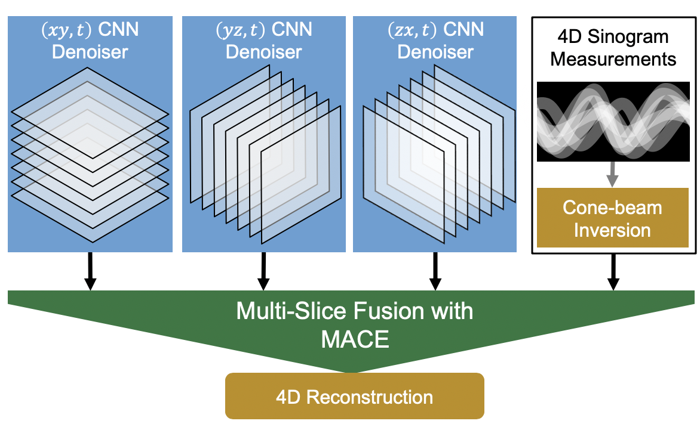
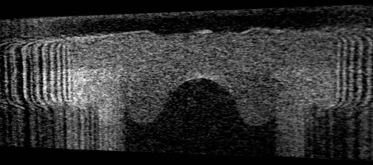
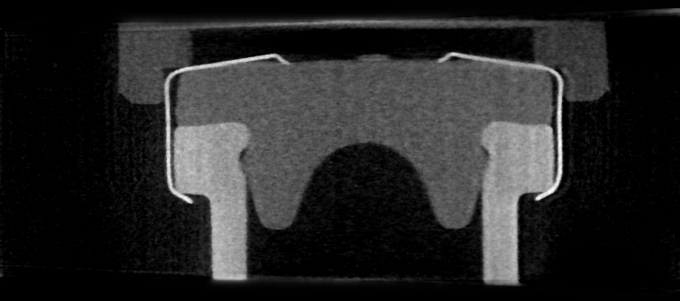
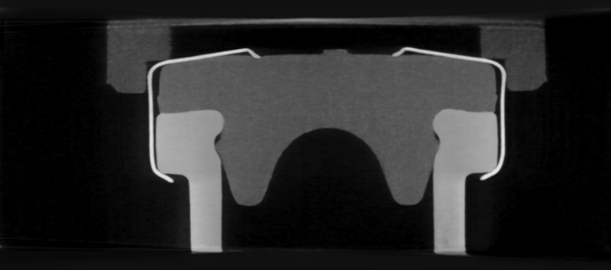
CodEx: Coded Exposure CT Reconstruction
Purdue University & Argonne National Laboratory
CodEx focuses on coded exposure methods for CT reconstruction improvement. By designing the exposure pattern in a coded fashion, this technique enables improved image quality and noise characteristics in computed tomography reconstruction. The work was carried out in collaboration with the Advanced Photon Source at Argonne National Laboratory, enabling practical evaluation at a world-class synchrotron X-ray facility.
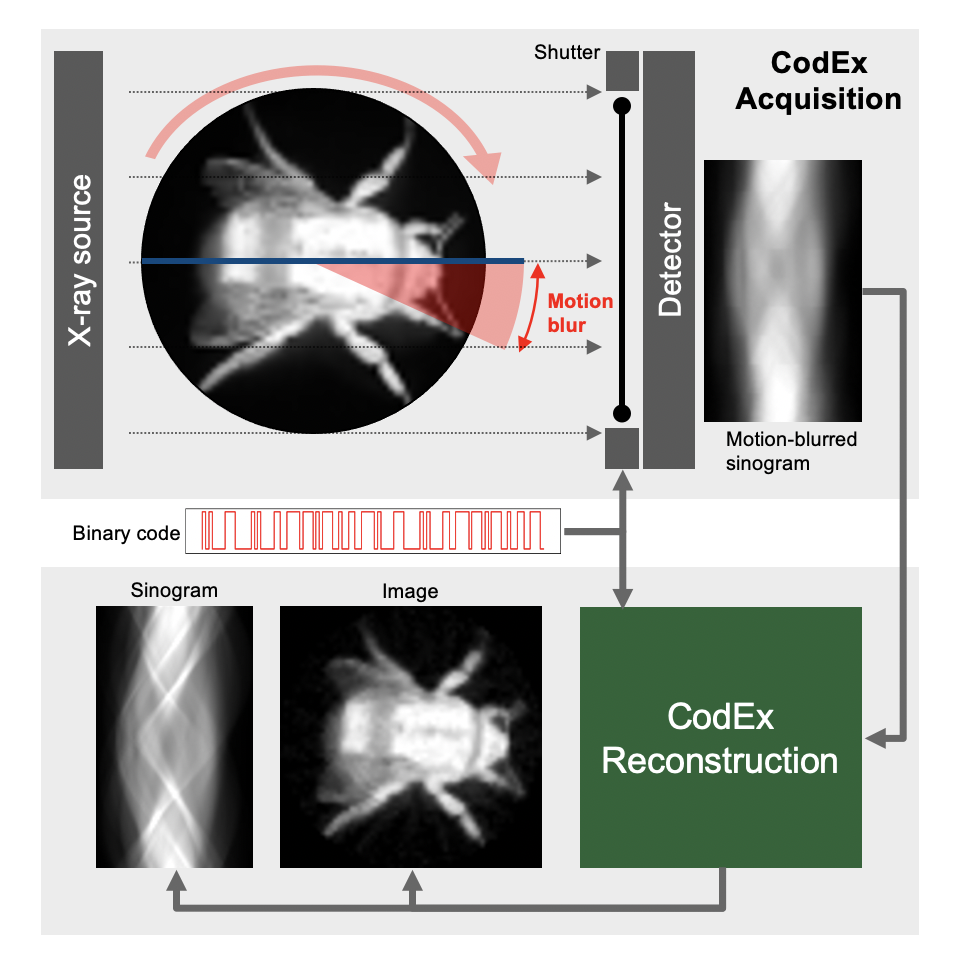
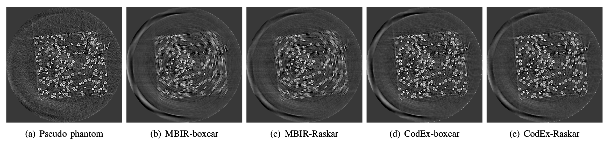
Multi-Pose-Fusion
Purdue University & Eli Lilly
This work addresses metal artifacts in X-ray CT by fusing information from complementary measurement poses into a single reconstruction. Metal objects create severe artifacts in standard CT because they strongly attenuate X-rays, obscuring surrounding tissue or material. The pixel-weighted multi-pose fusion approach accommodates dense materials that would otherwise block views, significantly reducing beam-hardening and streaking artifacts in pharmaceutical and industrial CT applications.
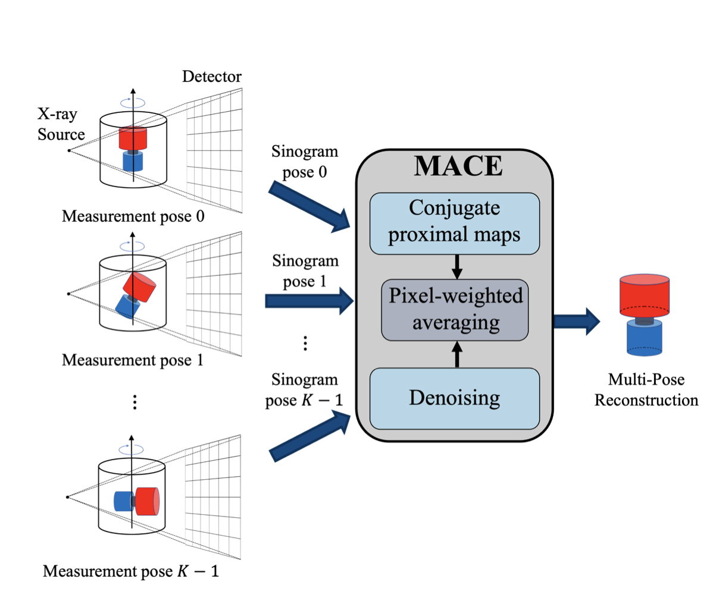
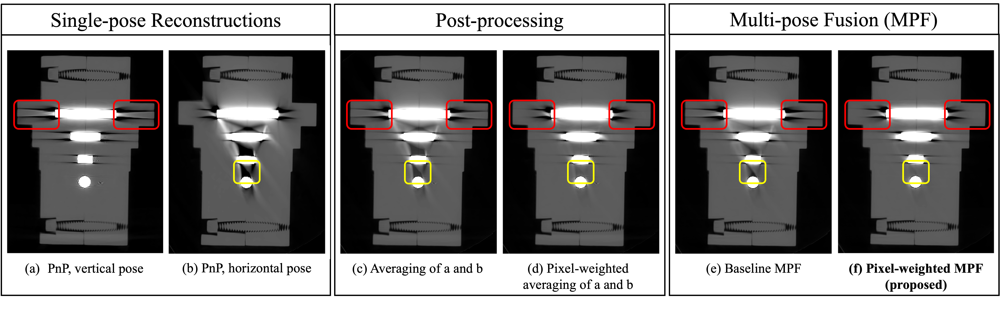
Separable Models for Cone-Beam MBIR Reconstruction
Purdue University, GE Aviation, Northrop Grumman & Air Force Research Laboratory
The separable cone-beam projection operator enables faster computation of tomographic reconstruction due to more efficient computation and improved parallelism and cache efficiency. This efficient projector facilitates model-based iterative reconstruction with advanced prior models, making high-quality 3D reconstruction practical for large-scale industrial non-destructive testing applications such as turbine blade inspection and composite material analysis.
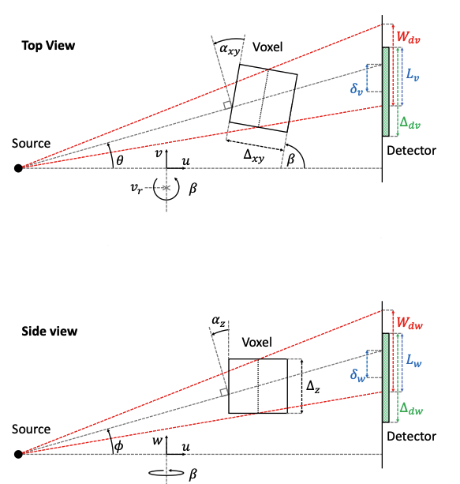
Model-Based Neuron Detection Using Sparse Location Priors
Purdue University
This work applies model-based approaches incorporating sparse location priors for neuronal identification in volumetric imaging datasets. Accurate automated neuron detection is essential for connectomics and neuroscience research, where manual annotation of large 3D microscopy volumes is prohibitively time-consuming. The model-based framework leverages the known sparsity of neuron locations to improve detection accuracy over purely data-driven approaches.
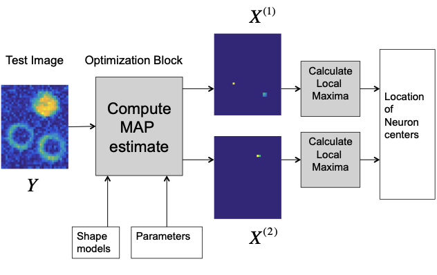
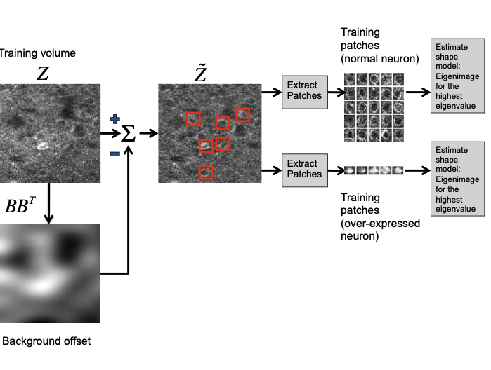